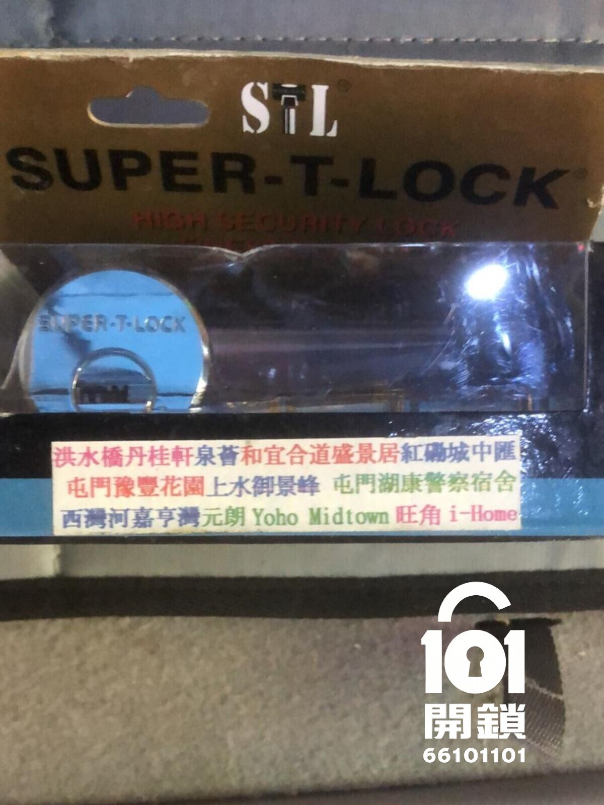

香港住宅以至村屋，經常見到美式鎖（American Mortise Lock）既出現。而鎖膽作為核心部分，主要分為兩大陣營：「螺絲膽」 同 「插針膽」。兩者雖然外形相似，但固定方法完全唔同，唔少業主/租客買錯鎖膽搞到新鎖膽浪廢，更有唔識更換而將鎖體搞到報廢。本文將深入剖析兩種鎖膽嘅分別，助你精明維修。
固定方式： 鎖膽側面有凹位，通過鎖體上一粒橫向螺絲直接收緊固定。更換時只需鬆開螺絲即可。
優點： 普及度高、五金舖容易配到；更換成本較低。
缺點： 螺絲日久鬆脫可能導致鎖膽晃動，更換需要技巧
固定方式： 利用插銷固定鎖膽，沒有外露，更換時只需即可抽出即可。
優點： 穩固耐用、更換簡單，無螺絲鬆脫風險。
缺點： 普及度低、一般五金舖難買/配到；更換成本較高。
無論螺絲膽定插針膽，用得耐都會出現不同問題。以下根據香港鎖匠維修經驗整合常見故障：
| 故障現象 | 可能原因 | 建議處理方法 |
|---|---|---|
| 鎖匙插入後扭不動／卡死 | 鎖膽內部珠片磨損、有異物或潤滑不足 | 噴專用鎖芯潤滑劑 (WD40不建議)，若無效需更換鎖膽 |
| 鎖膽可空轉但無法收回鎖舌 | 螺絲膽固定螺絲鬆脫，或插針膽聯動件斷裂 | 拆開面板檢查，螺絲膽請重新鎖緊螺絲；插針膽需由師傅更換聯動套件 |
| 鎖膽成個被抽出門外 | 螺絲膽螺絲完全甩掉 / 插針膽插銷遺失 | 即時更換固定件，否則安全隱患極大，需專業維修 |
| 鎖匙插唔入或插到一半卡住 | 鎖膽匙孔有異物、珠片移位或鎖膽變形 | 嘗試用壓縮空氣清潔，無效請更換鎖膽 |
| 室內把手正常但室外鎖匙無法開門 | 鎖膽與鎖體離合機制故障，或鎖膽損壞 | 測試鎖膽是否運作正常，必要時更換鎖膽並重新匹配 |
| 鎖膽轉動時發出刺耳金屬聲 | 內部零件鏽蝕或磨損嚴重 | 需更換全新鎖膽，避免鎖死困於門外 |
| 插針膽鎖匙轉動順暢但鎖體無反應 | 插針與鎖體撥動片脫離 | 必須拆鎖重組，屬複雜故障，即時call 101開鎖上門處理 |

師傅到場後重新定位鎖膽，收緊螺絲並加上防鬆墊片，15分鐘解決問題。收費$380，並提醒定期檢查螺絲。
由於插針膽結構特殊，師傅使用專用退銷器取出舊膽並更換全新原廠插針膽，同時保養鎖體，全程約45分鐘，客戶大讚專業。
以下屋苑/物業發展商原廠配置較多採用插針鎖膽 。如果你居住喺下列屋苑，更換鎖膽時請特別注意原結構，避免買錯螺絲膽導致無法安裝。
鎖體結構係決定買邊款鎖膽因素，兩者結構完全唔同。以下圖片位置展示兩種鎖體嘅實際分別，認清特徵先唔會買錯零件。
無論您嘅美式鎖係鎖膽定鎖體出現故障，我地101開鎖多年經驗，即場快速判斷問題並提供更換、維修服務。全港18區上門，收費透明，絕不濫收。
仲有疑問？立即聯絡專人解答